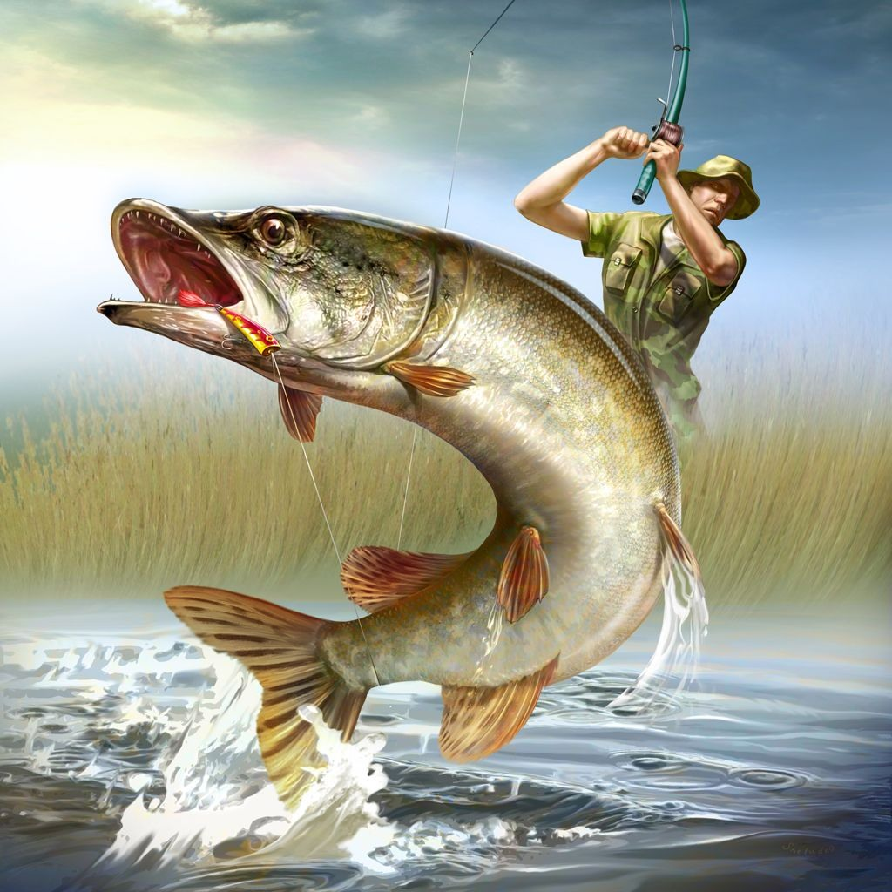

Рибалка — улюблене заняття багатьох людей. Дехто полюбляє куняти з звичайнісінькою вудочокою на березі річки, витрачаючи на це заняття по кілька годин. Інші ж купують потужні вудилища, снасті, запасаються цілим арсеналом приманок і влаштовують масштабні змагання зі спортивної рибалки. Цілі можуть бути у всіх різні, однак, щоб отримати від рибалки бажаний результат, до неї потрібно ретельно підготуватися. В цій статті розповімо про спінінг та спінінгові котушки. Як вибрати, на що звернути увагу, та в яких умовах, який спінінг проявить себе найкраще.
З інформацією про вибір спінінга можна ознайомитись з цього відео: